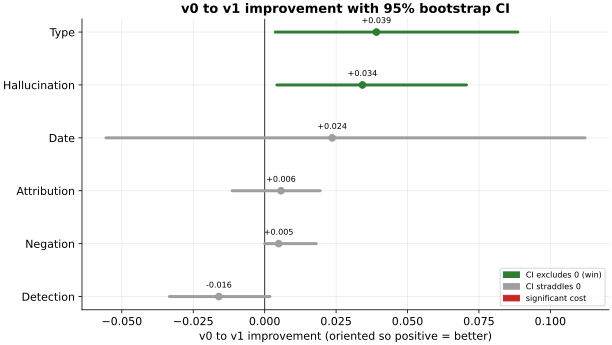
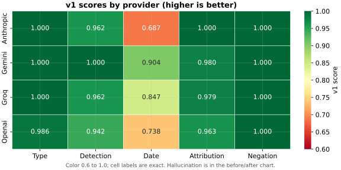
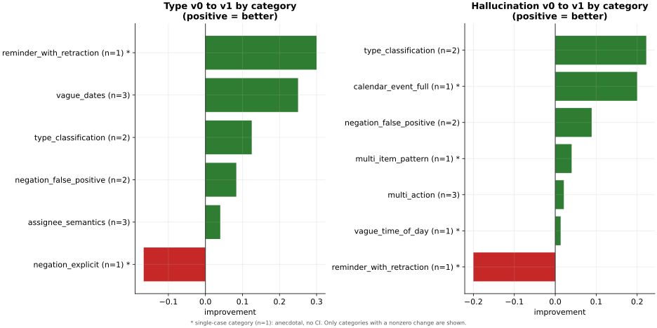
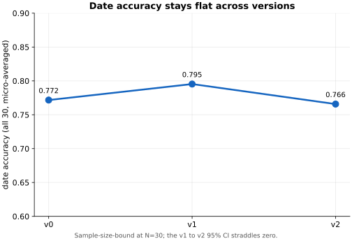

MemoCheck is two things that only matter together: an agent that turns a voice-memo transcript into strict JSON intent (todos, calendar events, reminders, notes), and an evaluation suite that measures how reliably that extraction works. Scoring is deterministic and owned in-repo; DeepEval is used only as the pytest-native test runner, not as the grader. Every number below is micro-averaged across 4 providers, 30 cases, and 3 attempts. v1 is the agent of record.
Full write-up, methodology, and reproduction steps live in the project README on GitHub.
3-minute walkthroughVideo walkthrough
A 3-minute tour of what I built and what the evaluation found. The rest of the page is the written version.
The hero resultv0 to v1, with confidence intervals
The same deltas shown as improvements (oriented so positive is better), each with a 95% bootstrap confidence interval. Only Type and Hallucination clear zero. Detection is the disclosed cost sitting left of zero. Date's interval is too wide to call.

LeaderboardPer-provider, v0 to v1
Each cell shows the v0 score, then v1. Higher is better for every metric except hallucination rate, where lower is better. The bottom row is the micro-average across all four providers.
| Provider | Detection | Hallucination | Type | Date | Attribution |
|---|---|---|---|---|---|
| Anthropic (Haiku 4.5) | 0.981→0.962 | 0.044→0.000 | 0.922→1.000 | 0.709→0.687 | 0.977→1.000 |
| Gemini (3.1 Flash Lite Preview) | 1.000→1.000 | 0.019→0.000 | 0.981→1.000 | 0.863→0.904 | 0.958→0.980 |
| Groq (Llama 3.3 70B) | 0.962→0.962 | 0.057→0.038 | 0.960→1.000 | 0.771→0.847 | 1.000→0.979 |
| OpenAI (GPT-4.1 mini) | 0.987→0.942 | 0.105→0.052 | 0.968→0.986 | 0.738→0.738 | 0.965→0.963 |
| All (micro-avg) | 0.982→0.966 | 0.057→0.023 | 0.958→0.997 | 0.772→0.795 | 0.975→0.981 |
OpenAI is the hallucination laggard (0.052 at v1, still the highest after halving from 0.105 at v0) and took the biggest detection hit. Gemini leads on date accuracy. The negation and schema-adherence metrics are reported separately below, because neither carries an iteration story.
By provider and metricv1 scores, at a glance
The v1 (agent of record) score for each provider and metric. Hallucination is excluded here because lower is better for it; see the leaderboard and the hero chart for that metric.

Where v1 moved the needlePer-category deltas
The v0 to v1 change broken out by failure category, so the story is which failure modes actually moved, not just the aggregate.

The honest negativev2 attacked date accuracy, and it did not move
v2's one job was to lift date accuracy. All-30 date went 0.795 → 0.766 with a CI of [-0.086, +0.026]: no move. That is the honest result. At 30 cases, the effect a single prompt edit can produce (~0.03) is smaller than the test set's case-sampling noise (~±0.06), so date is sample-size-bound. This is a finding about the benchmark's resolution, not a v2 failure, and it is why there is no v3.

Already solvedTwo metrics with no iteration story
- Negation handling is near-perfect from v0 (0.995, then 1.000 at v1 and v2 with a zero-width CI). Current models handle "scratch that" retractions and false-positive traps well, so this is a single finding, not an iteration metric. The test set deliberately over-invested in negation expecting a failure mode that did not materialize.
- Schema adherence is 100% on the first LLM attempt across every provider and version. The structured-output plus Pydantic-validate-and-retry design works. It is a validation result, not a before/after signal.
How it worksMethodology
- Test set. 30 hand-labeled transcripts (22 self-recorded plus 8 synthetic edge cases), split into 24 visible and 6 held-out (ADR-004). The held-out six were never opened during failure-mode analysis or v1 design.
- Scoring. A deterministic in-repo scorer: an embedding plus Hungarian matcher with a judged band (ADR-002), then tiered metrics for detection, hallucination, type, date, attribution, and negation (ADR-001).
- Aggregation. Every metric is micro-averaged: the sum of raw per-case numerators over the sum of denominators, so a case with one action item does not count as much as a case with five.
- Confidence intervals. Each reported delta carries a 95% bootstrap CI from 1000 resamples of the per-case scores (ADR-005).
The full methodology, including the matcher spot-check validation and the labeling conventions, is in the README.
Honest caveatsLimitations
- Small N. 24 visible plus 6 held-out cases. The bootstrap CIs are wide, especially on the held-out split. A held-out CI that straddles zero is not on its own evidence of failure to generalize.
- v0 is not a blind baseline. The v0 prompt and the labeling guide were co-designed, so v0 already knows the schema conventions the test set uses. The v0 to v1 delta is still meaningful, but absolute v0 scores are not "what an off-the-shelf agent would do on novel data".
- English only, single speaker, single labeler. Accent robustness, multilingual extraction, noisy-background performance, and inter-annotator agreement are all out of scope.
- Provider snapshot, not provider capability. Every score is conditional on the model versions used at run time. Provider behavior drifts.
The complete limitations list is in the README.
What's nextWhere this study points next
- A bigger, date-dense test set, sized for resolution. The flat date trajectory above is a measurement limit, not a dead end: at N=30 the benchmark cannot resolve a ~0.03 date effect against ~±0.06 sampling noise. The next step is more date-bearing cases, stratified by memo size and date type, planned for statistical power.
- A detection-focused iteration. v1 cut hallucinations but dropped 10 real items, because detection and hallucination read off the same matcher pool. The next iteration would decouple them: recover the dropped true positives without re-adding the false positives, likely a two-pass extract-then-filter rather than one prompt knob.
Full future-work list, including productionization, in the README.
Run it yourselfReproduction
The frozen run data lives in data/db_snapshot/, so every number on this page is auditable even though the agents are not bit-for-bit reproducible (run-to-run nondeterminism is explained in the v2 failure analysis). The charts on this page are generated from data/results/*.json by scripts/build_charts.py.
Clone the repo, pip install -e ., and follow the reproduction steps in the README.